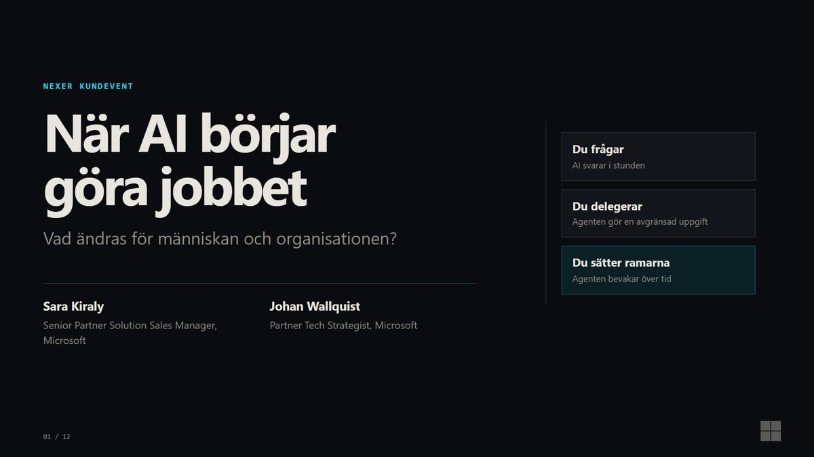

 Nexer kundevent2026Svenska När AI börjar göra jobbet Vad ändras för människan och organisationen? Sara Kiraly och Johan Wallquist · Microsoft Öppna presentationenLadda ned PDFTre prompter att testa på måndag v3 · Publikversion · Arkiverad version